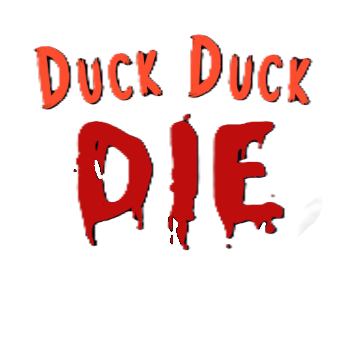

Project 1 – Duck Duck Die
- Reference game
- Race the Sun
- Genre
- Endless Runner
- Duration
- 6 weeks (half time)
- Team size
- 14
- Engine
- Unity
Summary
Since this was my first full game project outside of just playing around with engines in my free time, I tried to work with MVP in mind.
At the start of the project I mainly focused on player movement so the level designers could start building and testing ideas as early as possible. After that I moved on to setting up basic placeholder collisions so there was testable gameplay.
Later in the project I went back and improved the collision setup, replacing many mesh colliders with simpler colliders that better matched the models and were more efficient.
Contributions
Controls and physics material
I implemented a basic side-to-side movement with a static forward movement, and made it so the level designers could tweak the values in the editor.
We noticed quite early that the player got stuck on the walls, so I found the physics material and set its friction to 0 so the player would not stick to walls or objects.
UI and Particle Effects
One of my tasks was implementing particles and some in-game UI effects.
The particles themselves were quite simple since Unity’s particle system is very user friendly, but we wanted particles to appear in the gameplay UI when the player got points or picked up ducklings.
This was a bit harder since I didn’t know how to render particles only in the UI. I ended up solving it by creating a second camera that only renders particles, which is then shown through the UI camera.
Collisions and Bug Fixing
Once the core gameplay systems were in place, I took over more responsibility for collisions and collider setup to make sure gameplay interactions worked correctly.
Towards the end of the project I also spent a lot of time finding and fixing bugs.
Conclusion: Working in a team
Throughout the project we worked together on many different systems. Sometimes I would implement the base version of a system, and later someone else would take over or improve it. Other times I continued on systems that someone else had started.